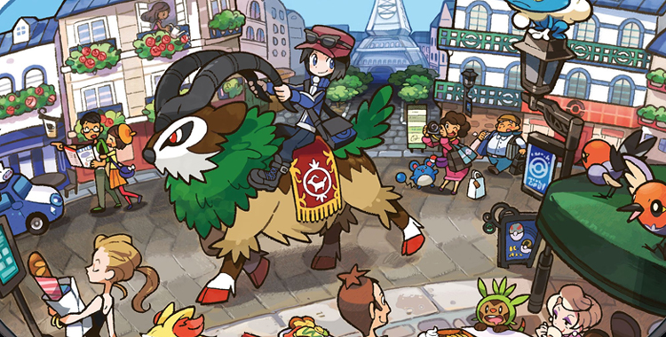

Descripción del juego
Pokémon X es un videojuego de rol desarrollado por Game Freak y publicado por Nintendo para la consola Nintendo 3DS. El juego se desarrolla en la región de Kalos y presenta una nueva generación de Pokémon para capturar y entrenar. Los jugadores deben convertirse en el Campeón de la Liga Pokémon mientras exploran el mundo y descubren los secretos de los Pokémon legendarios.
Características principales
- Gráficos en 3D mejorados
- Nuevos Pokémon y Megaevoluciones
- Nuevas mecánicas de juego, como el movimiento de patineta y el vuelo en ciertas áreas
- Batallas en línea y características de interacción con otros jugadores
Imágenes del juego
Requisitos del sistema
Para jugar Pokémon X en la consola Nintendo 3DS, se requiere:
- Consola Nintendo 3DS o Nintendo 2DS
- Cartucho del juego Pokémon X
Información adicional
Aquí puedes encontrar más información sobre los eventos especiales, contenido descargable y actualizaciones del juego Pokémon X.